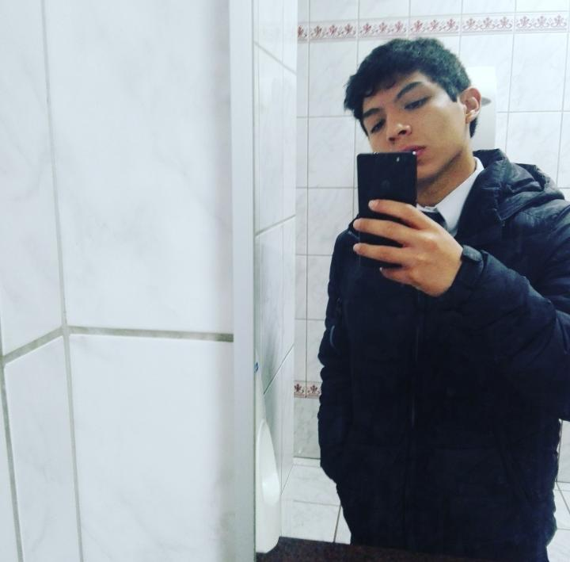

Hola, soy Samuel Román
Soy un desarrollador y estudiante de Ingeniería de Software de la Universidad Nacional Mayor de San Marcos. Soy alguien apasionado respecto al desarrollo de software y me mantengo constantemente aprendiendo las tecnologías necesarias que requiere el mercado laboral.